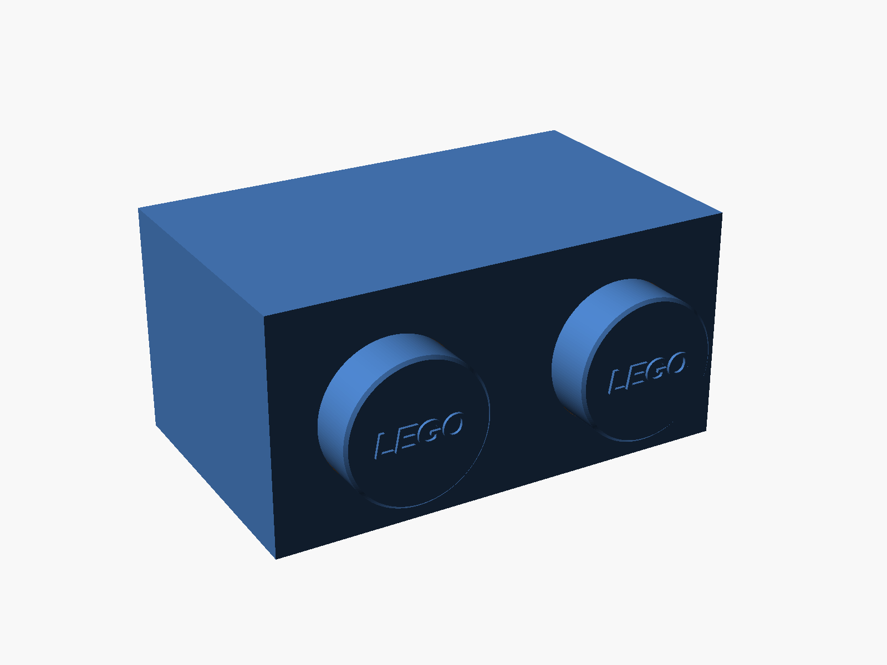

Home & kids / 1×2 & 1×4
LEGO-style brick wall shelf
A wall shelf built on real LEGO brick proportions, scaled to 245 mm wide, with LEGO-lettered studs and a flat top for displaying builds.
- Width
- 245 mm
- Shelf top
- 149 or 74 mm deep
- Print pieces
- Body + glued studs
- Supports
- None
{kind=link}

1×2 shelf · Model render. Select the image to enlarge.
{kind=link}
{kind=link}
{kind=link}
{kind=link}
A real LEGO brick, scaled up
Every dimension follows a real 1×2 or 1×4 brick: N × 8 − 0.2 mm long, 7.8 mm wide, and 9.6 mm tall, with 4.8 mm studs on an 8 mm pitch. Scaled to 245 mm long, it fills a Prusa MK3/MK3S bed with room for a skirt. The brick hangs with its studs facing into the room, so its flat side becomes the shelf top.
Print the body and studs separately
Print the body with the shelf top face-down on the bed and the open side up, exactly as the STL is oriented; it needs no supports. Print the studs flat on their backs with the lettering up, then glue each one into its 1 mm locating recess with CA glue. At 0.20 mm and 15% infill in PLA, the 1×2 takes about 21 hours and 382 g, and the 1×4 about 9.5 hours and 154 g.
Hang it on two screws
Keyhole slots in the 3 mm back wall take pan-head screws with heads up to 9.5 mm and shanks up to 4.5 mm. Space the screws 124 mm apart for the 1×2 or 185 mm for the 1×4, leave about 3.5 mm under each head, and lower the shelf onto them. The open underside lets you see the screw heads while you line it up.
Trademark
LEGO® is a trademark of the LEGO Group, which does not sponsor, authorize, or endorse this model.
Design: Beau Gosse · AI-assisted creation.
CC BY-NC-SA 4.0 · Noncommercial use, attribution, and share-alike.